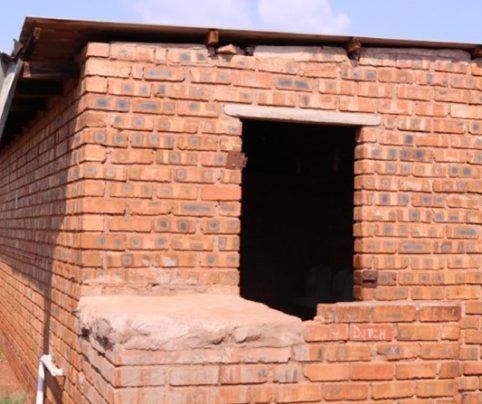
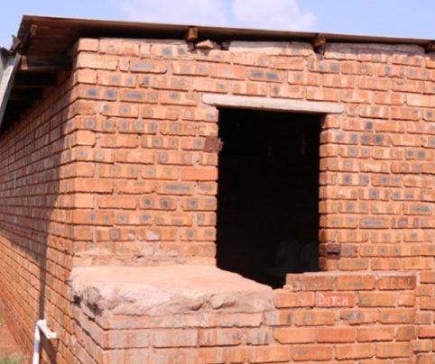
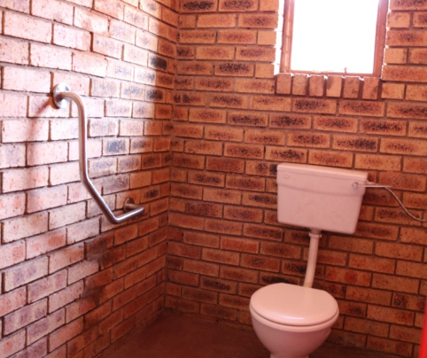
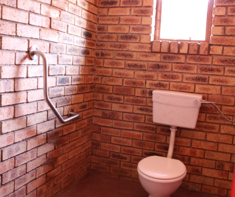

EXTENSION PROGRAM FOR "RED" TEACHERS
A key area of focus during the year has been the six-month extension program, designed to support teachers categorised as "red" based on assessments conducted by JET Monitoring and Evaluation (M&E). These teachers were identified as having significant gaps in both content knowledge and pedagogical practices, particularly in Mathematics and English First Additional Language (EFAL).
The extension program aimed to address these deficiencies, with a targeted focus on critical areas such as writing and language structures in EFAL, as well as improving Mathematics teaching methodologies. The program provided tailored interventions, equipping educators with the skills and knowledge needed to improve learner outcomes in these core subjects.


 



 
